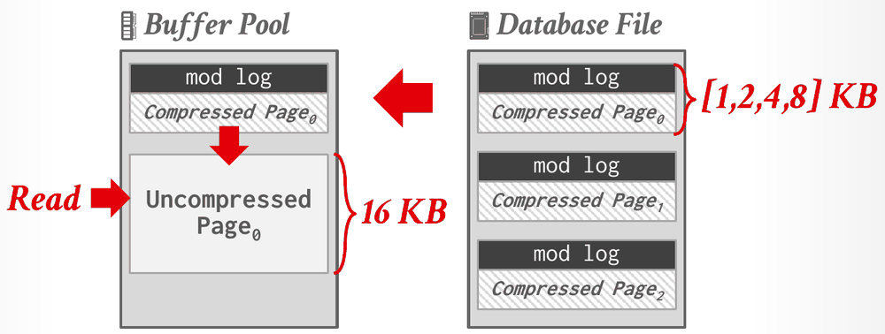
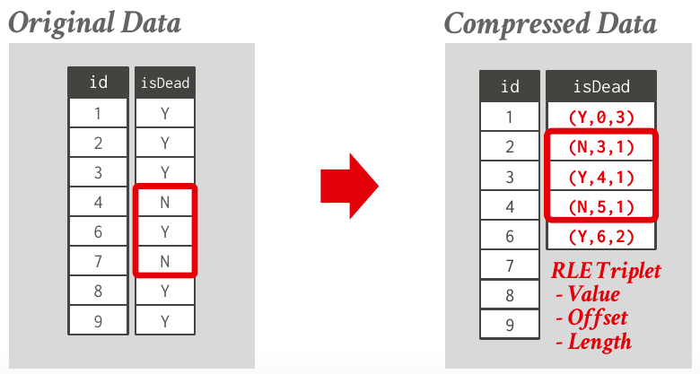
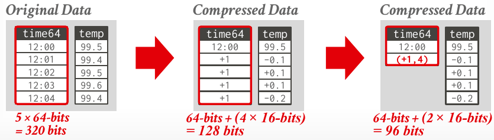
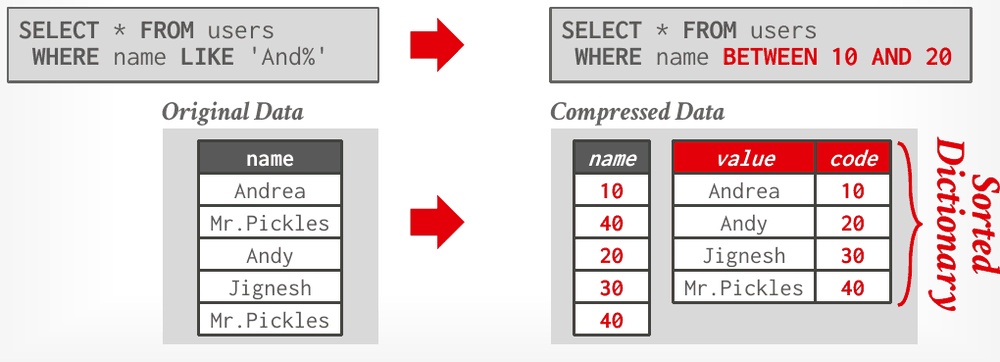

Database Internals in Go · Unit 1 · Lesson 5
Database Compression
Why a DBMS compresses its data, what a compression scheme must guarantee inside a DBMS, and how the main columnar encodings work.
Lesson 4 showed that a column store reads only the attributes a query needs. Compression makes each of those pages hold more values. When the DBMS fetches data from disk during a query, I/O is the main bottleneck, so more useful values per page means fewer I/Os per query. The second half of lecture #06 starts with general-purpose compression applied to whole pages, shows why that isn't enough, and then covers encodings designed so the DBMS can work on the compressed data directly.
Lesson 3: in a log-structured store, the newest SSTable holding key k contains DEL(k), and an older SSTable holds PUT(k, v). The MemTable doesn't hold k. What does GET(k) return?
Lesson 2: in BusTub, at which byte offset inside the tuple does column c of t(a INT, b BIGINT, c INT) start?
Lecture #01: R holds 4 tuples and S holds 5, and both have an attribute id. How many rows does SELECT * FROM R, S; return?
Why and how to compress
Compressing pages raises the amount of useful data that each I/O moves. The main trade-off is speed against compression ratio: a tighter encoding saves more space but costs more CPU work to produce and to undo. Compression also reduces how much DRAM the database needs, and it may lower CPU costs during query execution. It is especially popular in systems with read-only analytical workloads.
The lecture sets three goals for a database compression scheme:
- It must produce fixed-length values, so that the DBMS can keep data word-aligned and find a value by its offset. The only exception is variable-length data stored in a separate pool.
- It should let the DBMS postpone decompression for as long as possible during query execution. This is called late materialization.
- It must be lossless. Any lossy compression has to be done by the application.
The lecture distinguishes four levels of compression granularity. Block-level compression works on a block of tuples from the same table, and tuple-level compression on each whole tuple, which only makes sense in a row store (NSM). Attribute-level compression works on a single attribute within one tuple, as with an overflow value, and can target several attributes of the same tuple. Column-level compression works on many values of one or more attributes across many tuples, which only makes sense in a column store (DSM).
Naive compression
Naive compression applies a general-purpose algorithm to blocks of data: Deflate (1990), LZO (1996), LZ4 (2011), Snappy (2011), Oracle OZIP (2014), Zstd (2015) or Lizard (2017). The considerations are the computational overhead and the speed of compression versus decompression, and engineers often accept a lower compression ratio in exchange for faster compression and decompression.
MySQL's InnoDB storage engine is the lecture's example. On disk, each page is compressed to 1, 2, 4 or 8 KB and carries a mod log, a log of changes to the page. A write can be appended to the mod log without decompressing the page; the notes call such writes blind writes. A read is different: the DBMS must decompress the page into a full 16 KB copy in the buffer pool first.

Naive schemes have two problems. The DBMS must decompress data before it can read or modify it, which limits how much data can be compressed together: compressing a whole table as one block would mean decompressing the whole table on every access. And the algorithms know nothing about what the data means or how the query will use it, so the DBMS can't delay decompression, which rules out late materialization. Ideally the DBMS would run queries on the compressed data itself. If the value 'Andy' is stored as the code XX, then WHERE name = 'Andy' can become WHERE name = XX, and the column never needs decompressing.
#06 Storage Models & Compression, slides 27–33: why compress, the three goals, granularity, naive compression and InnoDB's mod log.
Columnar encodings
Column stores use encodings that the DBMS can read without first decompressing the data back to its original form.
Run-length encoding
Run-length encoding (RLE) compresses each run of repeated values in a column into a triplet: the value, the run's start offset in the column, and the run's length.

Some queries, such as SELECT isDead, COUNT(*) FROM users GROUP BY isDead, can run on the triplets without expanding them. RLE needs the column to be sorted intelligently to find long runs: sorted so that its six Ys come first, the same isDead column is just two triplets, (Y,0,6) and (N,6,2). How well RLE works depends heavily on the data.
Bit-packing and mostly encoding
When an integer attribute's values are all smaller than its declared type allows, bit-packing stores each one in fewer bits. The lecture's eight int32 values (13, 191, 56, 92, 81, 120, 231, 172) all fit in 8 bits, so they shrink from 8 × 32 = 256 bits to 8 × 8 = 64 bits. Bit-shifting tricks then let the CPU operate on several packed values in a single word.
Mostly encoding, also called patching, handles columns whose values are only mostly small. Values that fit are stored in the smaller type, and each value that doesn't is replaced by a special marker and stored in its raw form in a separate table of (offset, value) pairs. In the lecture's example, one of eight values is 99999999, so the column takes 8 × 8 bits plus one 16-bit offset and one 32-bit value: 112 bits instead of 256.
Bitmap encoding
Bitmap encoding keeps one bitmap per distinct value of the attribute, where bit i of a bitmap says whether tuple i has that value. Bitmaps are usually split into chunks so the DBMS doesn't have to allocate one large contiguous block. For the isDead column, the two values Y and N are stored once (2 × 8 bits) and each tuple gets one bit in each of the two bitmaps (8 × 2 bits): 32 bits instead of 8 × 8 = 64. Some DBMSs also provide bitmap indexes.
The size of the bitmaps is the number of tuples times the number of distinct values, in bits, so bitmap encoding is only practical when the cardinality is low. With many distinct values, the bitmaps can be larger than the original data, and every insert must extend every bitmap. Compressed data structures such as Roaring Bitmaps exist for sparse bitmaps.
Delta encoding
Delta encoding stores the difference between each value and the one before it in the same column. The base value is stored in-line or in a separate lookup table. Runs of equal deltas can then be compressed again with RLE. The frame-of-reference variant subtracts one global minimum value instead of the previous value.

#06 Storage Models & Compression, slides 35–43: run-length, bit-packing, mostly, bitmap and delta encoding.
Dictionary encoding
Dictionary encoding replaces frequent values with smaller fixed-length codes, typically one code per distinct value, and keeps a dictionary that maps the codes back to the original values. It is the most widely used native compression scheme in DBMSs, and it is how a column store turns variable-length values into fixed-length ones (Lesson 4). A good dictionary supports both directions quickly, for point and range queries alike:
- encode (or locate): for an uncompressed value, find its code;
- decode (or extract): for a code, find the original value.
Because it has to decode, a dictionary can't be a plain hash function. To support range queries, the codes must also sort in the same order as the values, with the same collation. Such a dictionary is order-preserving, and range and prefix predicates can then run on the codes:

LIKE prefix predicate becomes a range over the codes (Lecture #06, slide 45).The dictionary can sometimes answer a query on its own. SELECT name FROM users WHERE name LIKE 'And%' still has to scan the column, because it returns one row per matching tuple. SELECT DISTINCT name FROM users WHERE name LIKE 'And%' only needs the dictionary, which already lists each distinct name once.
The lecture's conclusion adds that DBMSs can combine encodings for even better compression, and that dictionary encoding is probably the most useful scheme because it does not require pre-sorting.
#06 Storage Models & Compression, slides 44–46: dictionary compression, encode and decode, and order-preserving codes.
Work it out: compress by hand
-
What to think about
Which value stays raw, how many deltas are there, and how many distinct deltas?
The method
Uncompressed: 8 values of 64 bits. Delta: the base stays 64 bits, and each of the 7 later values becomes a 16-bit delta of +1. Delta plus RLE: the seven +1 deltas form one run, stored as a (value, count) pair of two 16-bit fields, as on slide 43.
The result
Uncompressed: 8 × 64 = 512 bits. Delta: 64 + 7 × 16 = 176 bits. Delta plus RLE: 64 + 2 × 16 = 96 bits, the same as the slide's five-value example, because a run costs the same whatever its length.
-
What to think about
Each triplet is (value, start offset, length), with offsets counted from 0. How many runs does the column have before and after grouping?
The method
Walk down the column and start a new triplet whenever the value changes. After grouping, the column is three Ys followed by three Ns.
The result
Before: (Y,0,2) (N,2,3) (Y,5,1). After grouping: (Y,0,3) (N,3,3), two triplets instead of three.
-
What to think about
Order-preserving means the codes sort like the values. What order do the distinct values sort in?
The method
Sort the distinct values and number them from 0. Encode each tuple with its value's code. For the predicate, find the codes of the first value that is at least 'B' and the last value that is below 'D'.
The result
Austin = 0, Boston = 1, Chicago = 2, Pittsburgh = 3, so the column becomes [3, 1, 0, 1, 2]. The predicate becomes
code BETWEEN 1 AND 2.
Check your understanding
The first three questions are HW2 Question 3, with the answers from CMU's official solutions.
HW2 Q3(a): a VARCHAR column holds [Milwaukee Braves, Baltimore Orioles, Buffalo Blues, Brooklyn Gladiators, Chicago Cubs]. Each option lists uint32 dictionary codes in the same order as the values. Which set contains exactly the encodings that support both point queries and range queries?
HW2 Q3(b): table R(a) is compressed column by column. Making no assumptions about the type of a or the distribution of its values, which schemes become more space-efficient if the table is sorted on a before compressing?
HW2 Q3(c): which of these statements about the encodings is true, according to CMU's official solution?
A customer table has 10 million tuples, and its zip_code column has 43,000 distinct values. Using the lecture's arithmetic, how much space do the bitmaps take with bitmap encoding?
The isDead column is stored as the RLE triplets (Y,0,3) (N,3,1) (Y,4,1) (N,5,1) (Y,6,2). Working on the triplets alone, what does SELECT isDead, COUNT(*) FROM users GROUP BY isDead return?
Primary sources: CMU 15-445/645 Fall 2025 lecture #06, Storage Models & Compression (slides 27–46 and 54, notes §3–5); Homework #2 Question 3 and its official solutions.